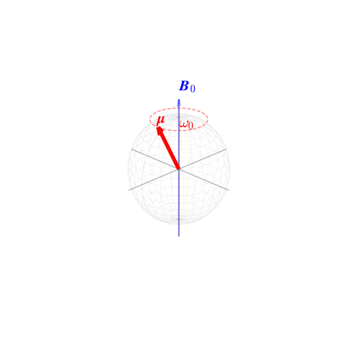
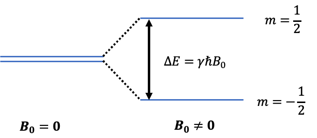
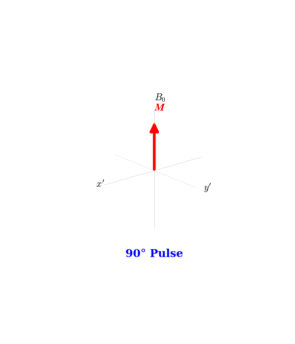
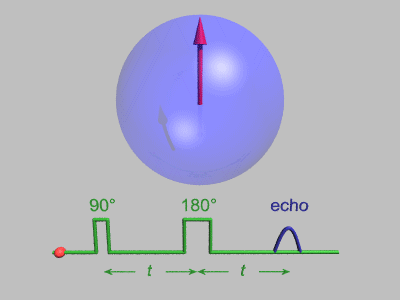

NMR(Nuclear Magnetic Resonance：核磁気共鳴) とは、原子核が特定の周波数の電磁波と共鳴して、エネルギーを吸収する現象です。 この現象の解析によって、試料を破壊することなく、物質の分子構造や化学状態を詳細に知ることができます。
核スピン量子数\( I \)が0でない原子核はそれぞれ核磁気モーメント \( \boldsymbol{\mu} \) を持っており、それによって小さな磁石のように振る舞います。
外部磁場 \( \boldsymbol{B_0} \) を原子核に対して印加すると、磁気モーメント \( \boldsymbol{\mu} \) は \( \boldsymbol{B_0} \) を軸にして角周波数
$$ \omega_0 = \gamma B_0 $$
で歳差運動します。
これをラーモア歳差運動といい、\( \omega_0 \) はラーモア周波数と呼ばれています。

また、外部磁場の影響で核スピンの向きは磁場の向きと順並行、または逆並行に揃い、磁場と同じ向きに巨視的な磁化 $$ \boldsymbol{M} = \sum \boldsymbol{\mu_i} $$ が現れます。\( \boldsymbol{M} \) が磁場と同じ向きである理由は、逆並行に比べて順並行の状態の方がエネルギー的に安定であるため、数が少し多くなるからです。
そして、\( 2I+1 \) 個（\( I \)：核スピン量子数）のエネルギー準位に分裂します。これをゼーマン分裂といいます。例えばスピン \( \frac{1}{2} \) の場合であれば、Figure2のように分裂し、そのエネルギー差は
$$ \Delta E = \gamma \hbar B_0 $$
で表されます。ここで、\( \gamma \) は核種ごとの磁気回転比です。
そしてこの差に対応する周波数
$$ \omega_0 = \gamma B_0 $$
の電磁波を照射すると、原子核はエネルギーを吸収して共鳴します。
これが核磁気共鳴現象です。

以下では、NMRの基本的な現象であるFIDについて説明します。
ラーモア周波数で回転する回転座標系において、Figure3のような状況を考えます。
無数の核スピンが磁場方向を軸として歳差運動をするので、それらの総和をとった\( \boldsymbol{M} \)は磁場の方向に従います。ここに、パルスを照射して\( \boldsymbol{M} \)を\( x'y' \) 平面に90°倒します。
その後、磁場の不均一性などにより、それぞれのスピンの回転周波数にばらつきが生じます。そのため、\( \boldsymbol{M} \)の横成分が減少していきます。一般に、観測信号は横磁化の大きさに比例するので、その大きさは徐々に減衰していきます。
この一連の過程をFID（自由誘導減衰）といいます。

続いて、同じくNMRの基本的な現象であるSEについて説明します。
90°パルスの中心時刻から時刻 \( \tau \)後に再びパルスを2倍の時間かけて照射すると（180°パルス）、磁気モーメント \( \boldsymbol{\mu_i} \) はそれぞれ180°回転します。

すると \( 0\le t<\tau \) の間に蓄積された磁場の不均一性による位相差がちょうど相殺され、\( t\approx 2\tau \) でスピンが再収束し、大きな磁化が現れます。この過程で再び信号を観測することができます。この信号をSE（Spin Echo：スピンエコー）といいます。これにより、磁場のムラによる影響を取り除き、物質本来の性質を測ることができます。
以下のシミュレータでパラメータを操作し、FIDとSEの波形変化を確認できます。
グラフの緑色の線は印加したパルス、白い線は観測される信号を表しています。
（本シミュレータでは、ローレンツ分布の仮定やハードパルス近似*1などを用いているため、実際に見られる波形とは少なからず差異が生じます。）
NMRの技術は、医療や化学の分野で広く応用されています。最も有名な例がMRI（磁気共鳴画像法）です。
人間の体は多くの水分（水素原子核）を含んでいます。MRIは、体内にある水素原子核の \( T_1 \) や \( T_2 \) などの緩和時間の違いを画像化することで、がん組織や脳の構造などを映し出しています。
また、化学や薬学の分野では、新しい薬の開発や材料の分析において、分子の構造を決定するためにNMRが不可欠なツールとして使われています。
パルス照射中、スピンは「横方向のパルス磁場 \( B_1 \)」と、上記の「縦方向のズレ磁場 \( \Delta B_z \)」の両方を感じて、その合成ベクトル（有効磁場）の周りを回転します。
しかし、通常の実験では非常に強力なパルスを一瞬だけ照射するため、横方向の力が圧倒的に強くなります（\( B_1 \gg \Delta B_z \)）。そのため、本シミュレータでは縦方向のズレを無視し、スピンはきれいに横軸周りに回転するとみなしています。
本シミュレータでは、90°パルスから180°パルスの間（時間 \( \tau \)）における、縦緩和（\( z \) 軸方向への回復）を計算に入れていません。これには以下の2つの理由があります。